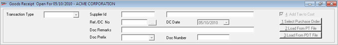

Goods Receipts based on Stock No.
To Add Goods Receipts based on Stock No.
Header Information
:

Transaction Type:
Select the transaction type from the drop down list. The list can show
values as Purchase, Transfer In, Approval Receipt and Miscellaneous Receipts,
based on the setting of the System Parameter.
Supplier Id:
This caption dynamically changes based on the transaction type selected.
For Purchase,
the caption is Supplier ID, for
Transfer In, the caption is Chain
Store and for the other two types, the caption is Customer
ID.
Enter the value or press
F2 to browse and select the value
in this field. On pressing F2,
a search window pops up. Choose
the Supplier id/ Customer
id.
On selection of the Supplier
Id the supplier’s name is displayed in next field.
Reason Code:
Select the reason for inward. This field gets displayed for transaction
types other than Purchase. Press F2
to display the catalogued reason codes so that the appropriate one for
the current transaction type can be selected.
Ref./DC No: Enter
the value or press F2 or click
 (the PT File browse) to browse in this field and select
the reference number of the document received. Choose the Invoice or DC
displayed against a specific supplier.
(the PT File browse) to browse in this field and select
the reference number of the document received. Choose the Invoice or DC
displayed against a specific supplier.
DC Date: Enter
the date of reference document.
Issue Prefix &
No.: This field is displayed when Approval
Receipt is selected as the Transaction Type. Approval receipt is
made against an approval issue made earlier. So, enter the prefix and
number of the approval issue in this field.
Doc Remarks:
Enter remark if any.
Source Tax Code:
Enter the tax code or press F2
to browse and select the value in this field. On pressing F2,
a search window pops up. Choose the appropriate tax code.
Doc Prefix:
Depending on the type of transaction the prefix is displayed automatically
provided there is only one prefix for that transaction type. Manual selection
is required when there are multiple prefixes.
Doc Number:
Displays incremental number for the selected Document.
4.Add Tax to Cost: Check this box if
taxes entered in the document are to be considered for computing the cost
price.
1.
Select Purchase Order: This is useful to select items against
the pending Purchase Order’s.
Note: If a purchase
order raised on the selected supplier is pending and the option 1.Select Purchase Order is not selected,
then a message Purchase Order Found for
Selected Vendor, Do you wish to Select PO is displayed. Click Yes to select the pending Purchase Order. If you
select No the cursor moves to
the Stock No. column and you can
enter the stock number or select the stock number by pressing F2
as per the requirement.
2.
Load from PT File: Click this option to load item details from
PT File.
The item details in the file will be loaded on to items
grid only if Supplier ID/ Chain Store ID, Doc Ref Number and Doc Date
entered in the respective fields of inwards entry screen matches with
that content of the PT file. If
not, a proper message will be displayed. A log file (Pt_Validator) is
created in the log folder (Shoper\Share\Log) while trying to load a PT
File. Indicators
are provided in the log file to identify the errors and corrections. If
the PT File cannot be loaded (due to format or data type errors), check
this log file to verify and correct the errors.
A Goods Inwards
done using Load from PT File creates
the pricing master for new items and updates the stock master.
3.
Load from PDT File: Click
this option to load item details from PDT file.
Items Entry Grid:
The combination of the fields available in this grid changes as per the
value provided. There are some common fields which are displayed irrespective
of the values provided. This grid is populated with values if you load
the data from a P.O./ PDT
File/ PT File. Click here
for more information.
Footer details
Ok: To save the goods inward entry
Cancel: To clear the entries made in
goods inward option
Alt + H: Key
to display or clear the hot keys list available
Ctrl + Alt + H:
Header Extension
Ctrl + Alt + D:
Detailed Extension
Ctrl + Alt + F:
Footer Extension
F4: To delete
an item
F7: To save
a transaction
Up/Down arrow:
To move across grid
Ctrl + I:
To alter MRP of an item
Ctrl + T:
To toggle between Item Description and Item Classification
Ctrl + 1:
Additional document information
Ctrl + 2:
Additional item information
Ctrl + 3:
Additional summary information
Ins
Key:
To create a new item